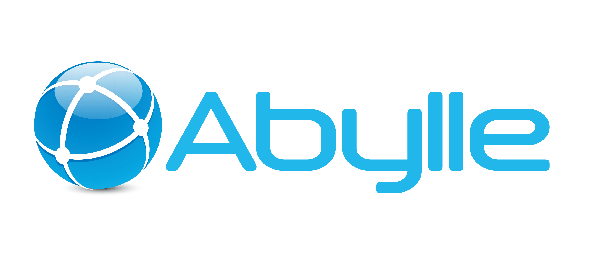

Work Experience

Software Test Engineer / Business QA Lead at Abylle Solutions
Duration: June 2022 – Present
Responsibilities & Achievements:
- Specialized in functional, integration, regression, and API testing.
- Expertise in BFSI (Banking) and Taxation domains.
- Proficient in RestAssured API testing, automation, and compliance.
- Experience with defect management and end-to-end quality assurance processes.
- Performed client walkthroughs and onsite testing for major clients.
- Provided IPO support and served as Business QA for sanity testing in the production environment.
- Led testing efforts for business-critical applications, ensuring high-quality delivery.
- Handled client onboarding, demos, and requirement gathering.
- Received appreciation from clients for delivering a bug-free product.
- Collaborated with cross-functional teams to streamline quality processes.
- Provided continuous support during production and post-deployment phases.
Software Engineer at Capgemini
Duration: Jun 2025 – Present
Key Contributions:
- Developed end-to-end automation for AIG’s internal applications using Java and Playwright (GATE framework).
- Automated major business workflows including Add Client, Add Brokerages, and Producer Code Validation.
- Integrated automation suites with Jenkins CI/CD pipelines for scheduled regression testing.
- Designed reusable scripts with dynamic selectors and robust error handling.
- Collaborated with developers and QA leads in Agile sprints to ensure timely and quality deliverables.